شجرة الجهنمية

تستخدم الجهنمية في تزيين الحدائق، الأسوار، والشرفات حيث تعطي لمسة ملونة وجميلة.
ياسمين احمر

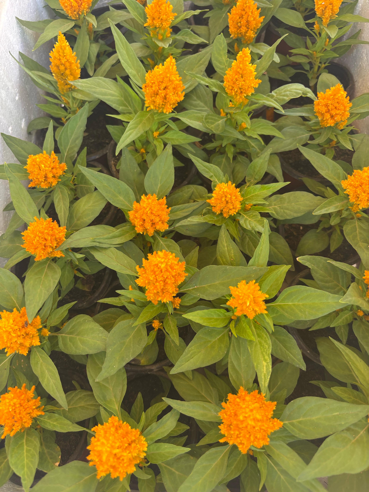
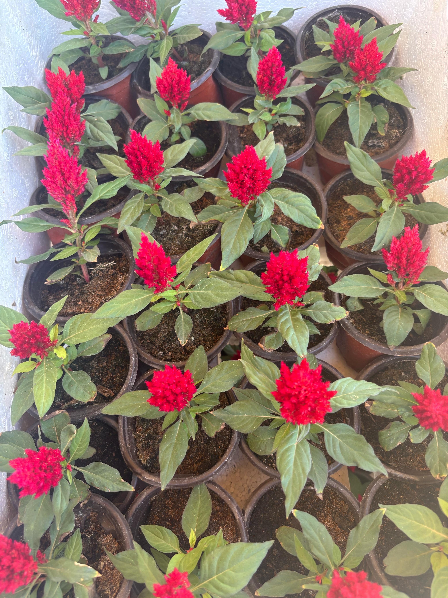
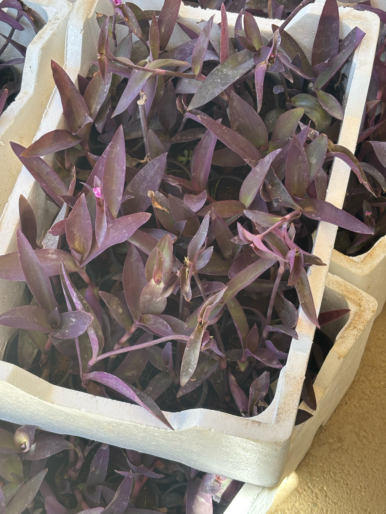
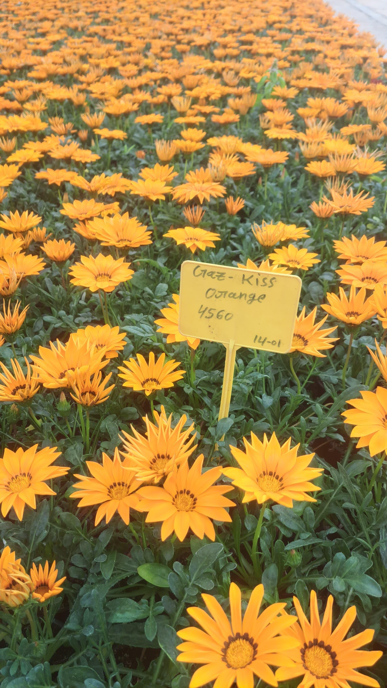
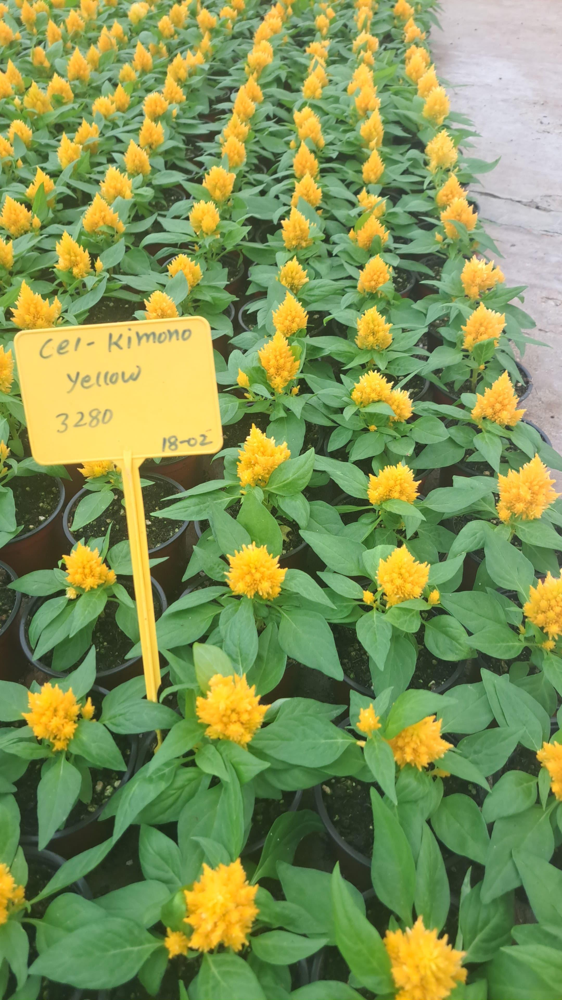
يتميز بتنوع ألوان أزهاره التي تبدأ باللون الأحمر ثم تتحول إلى اللون الوردي والأبيض مع مرور الوقت، مما يمنحه مظهراً ساحراً ومتغيراً.
شجرة اللبخ او زقن الباشا

تتميز بوجود تاج كثيف وفروع عديدة مما يجعلها شجرة مثالية للزراعة في الحدائق العامة أو كمصدر للظل في المناطق المفتوحة.
اشجار الجاتروفا

تشتهر هذه الشجرة بجمال أزهارها الملونة التي تتراوح من الأحمر إلى الوردي، مما يجعلها من النباتات التي تزين الحدائق والمناطق الاستوائية والمعتدلة حول العالم.
شجره الزعتر

يُعد نبات الزعتر من النباتات المعمرة العطرية التي تتميز بكثرة الفروع والأوراق، مما يجعله إضافة رائعة لأي حديقة.
ملكة الليل

نبتة سيدة الليل هي شجيرة دائمة الخضرة تتمتع بنمو سريع وقد يصل ارتفاعها إلى ما بين 2 إلى 4 أمتار.
لانتانا كمارا

لانتانا كمارا هي شجيرة دائمة الخضرة قد يصل ارتفاعها إلى حوالي 1-2 متر، ويمكن أن تكون نباتًا متسلقًا أو قائمًا حسب طريقة العناية.
شجره اثل امريكي

شجرة تنمو سريعاً ويصل ارتفاعها إلى 15 متراً وعرضها إلى 4 أمتار، بينما في موطنها الأصلي يصل ارتفاعها إلى 60 م
شجرة التيكوما

شجرة التيكوما من أشجار الزينة المميزة بأزهارها الصفراء الجذابة، بالإضافة إلى خصائصها الجمالية التي تجعلها من أشهر الأشجار المستخدمة في تزيين الحدائق.
شجرة الدفلة

شجيرة دائمة الخضرة قد تتحول إلى شجرة صغيرة (حتى 5 أمتار). سيقانها متفرعة بكثافة، ولحاؤها رمادي مائل إلى البني.
شجرة الدفلة البيضاء

شجرة الدفلة البيضاء نبات معمر شجيري يصل ارتفاعه إلى ما بين 2 إلى 3 أمتار. ذات شكل مستدير أو بيضاوي، متعدد الأفرع و السوق. و الأوراق خضراء رمحية. و الأزهار جذابة في نورات طرفية تظهر خلال الصيف. وأزهاره : بيضاء جميلة، وردية نقية، وردية فاتحة.
شجرة فيكس بلدي

شجيرة دائمة الخضرة، يصل ارتفاعها إلى 2-3 أمتار في الأصص الداخلية، وقد تصل إلى ارتفاعات كبيرة جدا في البرية.
شجره البابايا

تشتهر بثمارها البيضاوية أو كمثرية الشكل، التي يتراوح وزنها بين 1–5 كغم، لون قشرتها أخضر يتحول إلى أصفر أو برتقالي عند النضج، واللب داخلها برتقالي محمر غني بالعصارة والبذور السوداء.
يوسف افندي

تشتهر بثمارها البيضاوية أو كمثرية الشكل، التي يتراوح وزنها بين 1–5 كغم، لون قشرتها أخضر يتحول إلى أصفر أو برتقالي عند النضج، واللب داخلها برتقالي محمر غني بالعصارة والبذور السوداء.
الليمون ابو زهره

شجرة صغيرة إلى متوسطة الحجم، يبلغ ارتفاعها عادة بين 1.5 إلى 3 متر. تتميز بأوراقها اللامعة والعطرية، وأزهارها البيضاء الجميلة التي تنتج ثمارًا صغيرة نسبيًا مقارنة ببقية أنواع الليمون.
شجره لوز حساوي

شجرة لوز حساوي او اللوز البجلي شجرة واسعة الانتشار في المناطق المدارية. وفي الرياض ليست ناجحة في كل الأحوال لانخفاض الرطوبة، ولكن في المواقع المحمية حيث تروى النباتات الأخرى فإن نموها وأوراقها تتكون في صورة أحسن.
شجره التين

تحظى بشعبية كبيرة بفضل ثمارها اللذيذة والمغذية، التي تعد مصدرًا غنيًا بالفيتامينات والمعادن والألياف. كذلك استخدم الإنسان التين عبر العصور في العديد من الحضارات، سواء كغذاء أو كعلاج للعديد من الأمراض.
شجره فيكس امريكي

وهي شجرة ضخمة يكثر استخدامها كشجرة ظل في الحدائق و مواقف السيارات و تستخدم ايضاً للزينة في الشوارع وطرق المشاة، من مميزات هذه...
شجره الثويا

شجرة مخروطية الشكل دائمة الخضرة، يتراوح ارتفاعها بين 3 إلى 15 مترًا حسب النوع. تتميز بجذعٍ قائمٍ مغطى بلحاء بني محمرّ يتقشر مع تقدم العمر
شجرة الملنجتونيا

شجرة الملنجتونيا يمكن أن تستعمل سواء في الحدائق أو الطرق، هو مناسب لكل من يبحث عن تزين حديقته بالروائح العطرة. وبفضل الرائحة الجميلة لهذا الصنف والتي تنتشر في المساء والصباح الباكر، يصلح زراعته في الحدائق الخاصة وحدائق المستشفيات.
الدفلة المبرقشة

الدفلة المبرقشة نبات معمر شجيري يصل ارتفاعه إلى ما بين 2 إلى 3 أمتار. ذات شكل مستدير أو بيضاوي، متعدد الأفرع والسيقان يتميز بأزهار جذابة تظهر خلال الصيف.
نبات الريحان

الريحان هو نبات عشبي سنوي ينمو بارتفاع يتراوح من 30 إلى 60 سم . يتميز بنموه المتفرع من القاعدة، حيث يكون له سيقان رقيقة خضراء، ويتفرع بشكل كثيف مما يضفي عليه شكلًا شجريًا صغيرًا.
توت اسود او توت بلدي

شجرة متساقطة الأوراق يصل ارتفاعها إلى ١٠-١٥ مترًا، مع تاج واسع وكثيف. الجذع بني اللون، متشقق مع تقدم العمر، والفروع متعرجة تعطيها طابعًا فنيًا.
اكسيا جلوكا

تعد أكاسيا جلوكا شجرة دائمة الخضرة أو شجيرة كبيرة، حيث يتراوح ارتفاعها بين 4-8 أمتار. إضافة إلى ذلك، فإن جذعها مستقيم مع تاج متفرع كثيف يشبه المظلة، مما يجعلها جذابة في الحدائق.
نبات الياسيمن الاسترالي

يحتوي نبات الياسمين على أوراق بسيطة ثلاثية، وتتواجد فيها الزهور البيضاء الممتلئة بالورود الصفراء والفصوص على نطاق واسع.
نبات الكنا الهندية

نبات عشبي معمر يتراوح ارتفاعه بين 1-2 متر، يتميز بأوراقه الكبيرة والطويلة ذات اللون الأخضر الداكن أو الأحمر، وتزهر بكثرة في فصول معينة من العام.
ورد الجوري الهولندي

لامعة وخضراء داكنة ، و تتراوح طول الورقة بين 5-10 سم، وعرضها بين 2-4 سم،كما تتميز بحواف مسننة، مما يمنح النبات مظهرًا صحيًا وجذابًا.
شجره الخوخ البلدي

تتميز الشجرة بقوة نموها وبقدرتها العالية على تكوين الطرود والتبكير في دخول طور الإثمار.
نعناع

نعناع حار هو نبات عشبي معمر ينمو بشكل كثيف ومتوفر بأحجام مختلفة، حيث يصل ارتفاعه عادة إلى 30-90 سم، ويمتاز بأوراقه الخضراء اللامعة وبأغصانه المتفرعة التي تنتشر بشكل كثيف.
نبات اليوكا الداخلي

بات اليوكا و اسمه العلمي Yucca نبات صحراوي الأصل رائع جداً معروف للجميع، دائم الخضرة يستخدم كنبات داخلي أو خارجي، وجود اليوكا داخل حديقتك يجعلها مليئة باشكال وانواع مختلفة وغريبة من النباتات،
نبات الزاميا كولاس

نبتة معمرة دائمة الخضرة، تنمو حتى 60–90 سم في الأصص. تتميز بسيقان سميكة تشبه القصب وأوراق مركبة تشبه ريش النخيل.
صبار الشمعدان

للجو الدافئ ويتحمل انخفاض الحرارة إلى درجة 12 مئوية، ويتحمل جفاف الهواء، محب للإضاءة الساطعة المباشرة خاصةً في الشتاء ويفضل تجنبها في الصيف، تروى جيداً طوال السنة عدى فصل الشتاء فيقلل الري ما أمكن، وتعطى السماد المخفف بالماء في فصل الصيف خاصة، بواقع مرة واحدة كل شهر.
مراميه الفضة

نبتة دائمة الخضرة متوسطة الحجم، يتراوح ارتفاعها بين 1–2 متر. أغصانها كثيفة ومتداخلة، تشكل تاجاً مستديراً يشبه الوسادة.
نبتة العنكبوت

نبات معمر ينمو بشكل منتشر ويتميز بأوراق طويلة ضيقة خضراء اللون مع أطراف بيضاء أو كريمية. تنمو النبتة في شكل عناقيد تحتوي على العديد من الأفرع الطولية التي تشبه الأذرع، ولهذا سميت بنبتة العنكبوت.
نخلة اريكا

وتعتبر نخلة اريكا من النباتات المنقية للجو حسب الدراسة التي أجرتها ناسا في الثمانينات الميلادية حيث زادت شعبيتها. فقد تمت دراسة 50 نبتة من حيث قدرتها على إضافة الرطوبة للجو المحيط وتنقيته، وسهولة رعايتها، وأحرزت الأريكا المركز الأول في جميع هذه المعايير. فضلًا عن أنها غير سامة للإنسان أو للحيوانات الأليفة.
نخيل واشنطن

نبات نخيل واشنطن هو نبات نفضي للزينة ، شجرة طويلة دائمة الخضرة، جذعها رفيع و يتضخم بشكل كبير عند قاعدة الشجرة.
نخل السايكس

في التربه المزيجيه جيدة الصرف و الرطوبه المتوسطه و تنمو في المواقع المشمسه بشرط حمايتها من الشمس المباشره بزراعتها تحت ظل الاشجار الكبيره و تزرع داخل المنزل بتوفر الاضاءه الكامله،تتكاثر بالبذور والخلفه .
تيل طبيعي جميع الانواع

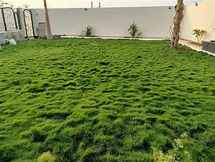
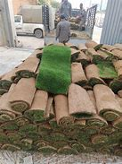
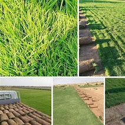
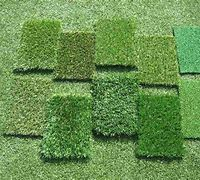
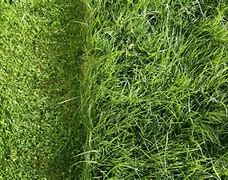
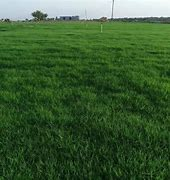